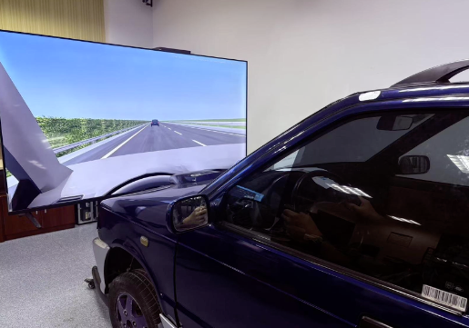

01
实验场景与平台搭建
目标：
搭建可支撑驾驶模拟研究的实验场景与软硬件运行环境。
完成：
基于 Unity 从 0-1 搭建驾驶实验场景，完成道路环境、事件逻辑与实验流程开发。
打通驾驶模拟器、显示系统与实验计算设备，实现软硬件联调与稳定运行。
针对道路、绿化与环境细节进行渲染优化，兼顾画面表现与运行性能，支持较低配置设备完成 90 分钟以上实验任务。
Unity 场景开发
软硬件联调
渲染优化

